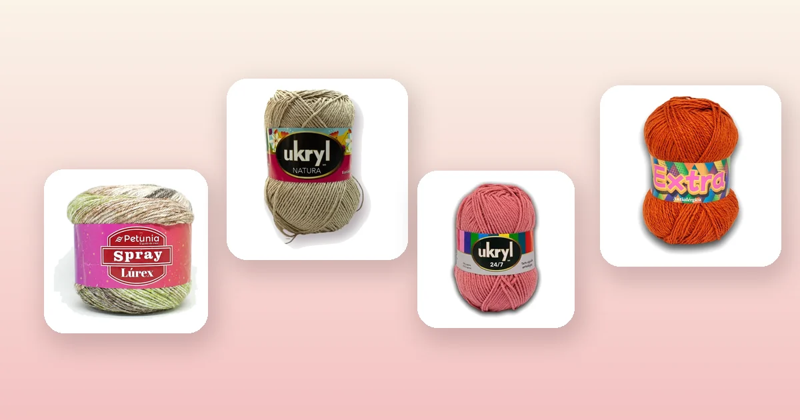

Proyectos de crochet
Cómo tejer un chal a crochet paso a paso
El chal triangular a crochet es el proyecto perfecto para quien ya domina los puntos básicos y quiere algo vistoso para usar o regalar: se empieza con una cadenita en la punta y crece vuelta a vuelta sin necesidad de patrón complicado. En esta guía tienes el paso a paso, la tabla de medidas por tamaño, opciones de bordes decorativos y todo lo que necesitas saber sobre el bloqueo para que te quede profesional.

Materiales para tejer un chal
Un chal a crochet es el intermedio perfecto entre una bufanda y un chaleco: tiene más presencia que una bufanda, se teje sin moldes como un chaleco, y además crece en diagonal, así que cada vuelta es un poco más larga que la anterior y nunca te aburres. Para empezar necesitas:
- Entre 3 y 5 ovillos de 100 g, según el tamaño del chal y el grosor del hilo. Más abajo tienes la tabla con las cantidades exactas.
- Un ganchillo acorde al hilo: de 4 a 5 mm para hilos de mezcla o lana media, de 3 a 3,5 mm para hilos finos de algodón. Si tienes dudas, revisa nuestra guía de qué ganchillo usar.
- Aguja lanera, tijeras, cinta métrica y marcadores de puntos para señalar el punto central del triángulo.
- Alfileres en T y una superficie para bloquear (una cama o una alfombra limpia sirven).
El chal pide un hilo con buena caída, que no pese demasiado y que sea agradable al cuello. Estas son las mejores opciones del catálogo:
- Para un chal matizado y llamativo: Petunia Spray Lúrex Verde Musgo o Petunia Spray Lúrex Camel, con 230 m por torta, brillo sutil y cambios de tono que lucen especialmente bien en una pieza grande. Toda la línea en lana Petunia.
- Para un chal liviano de entretiempo: Ukryl Natura Arena o Ukryl Natura Crudo, de 80% algodón y 20% acrílico, con 250 m por ovillo. Tienen caída natural y no pican. La línea completa en lana Ukryl.
- Para un chal abrigado: Lana Ukryl 24/7 Palo Rosa o Lana Ukryl 24/7 Gris, de grosor medio, que avanzan rápido.
- La opción más económica: Lana Ukryl Extra Terracota, 100% acrílica con 220 m por ovillo y buen rendimiento por precio. Mira toda la línea de Ukryl Extra.
La forma del chal: por qué el triángulo
El triángulo es la forma más popular para un chal a crochet, y no es casualidad:
- Se adapta al cuerpo: la punta cae en la espalda y las dos puntas laterales se cruzan sobre el pecho o cuelgan de los hombros.
- Se empieza pequeño: las primeras vueltas son cortísimas, así que avanzas rápido y ganas confianza antes de que el proyecto crezca.
- No necesitas calcular cadenas: empiezas con 4 o 5 cadenas y el chal crece solo al tejer aumentos en cada vuelta.
Existen chales rectangulares y chales en media luna, pero el triangular es el más versátil y el mejor para un primer proyecto. Es el que enseñamos aquí.
La muestra: antes de empezar
Teje un cuadrado de 12 × 12 cm con tu hilo, tu ganchillo y el punto que vas a usar. Mide al centro cuántos puntos y cuántas vueltas entran en 10 cm. Con eso sabrás dos cosas:
- Si el ganchillo es el correcto: el tejido debe quedar suelto y con caída, no rígido como una tabla. Si te queda apretado, sube un tamaño de ganchillo.
- Cuántas vueltas necesitas para llegar al largo que quieres. El chal crece aproximadamente el doble de centímetros por cada vuelta (porque crece hacia dos lados), así que 40 vueltas con una densidad de 14 filas en 10 cm te dan un chal de unos 57 cm de profundidad.
Si no sabes cómo hacer la muestra o cómo calcular los ovillos a partir de ella, la guía de cuánta lana necesito para tejer lo explica paso a paso.
Paso a paso: chal triangular desde la punta
Este patrón parte de la punta inferior del triángulo y crece hacia el borde superior. Usa solo cadenas, puntos altos y espacios, así que basta con dominar los puntos básicos de crochet.
Inicio
- Cadena 5. Cierra con punto raso en la primera cadena para formar un aro (o usa un anillo mágico y haz cadena 4).
- Vuelta 1: cadena 3 (cuenta como punto alto), 2 puntos altos en el aro, cadena 2 (este es el espacio central), 3 puntos altos en el aro. Gira.
Crecimiento
- Vuelta 2: cadena 3, 2 puntos altos en el primer punto. Teje 1 punto alto en cada punto hasta llegar al espacio central de 2 cadenas. En ese espacio: 2 puntos altos, cadena 2, 2 puntos altos. Sigue con 1 punto alto en cada punto y termina con 3 puntos altos en la cadena 3 del giro. Gira.
- Vuelta 3 en adelante: repite la vuelta 2. En cada vuelta aumentas 4 puntos altos (2 en cada extremo) más los 4 del espacio central, así que el triángulo crece de forma constante.
Patrón alternativo: hileras caladas
Si quieres un chal más liviano y con textura, intercala una vuelta calada cada dos vueltas sólidas:
- Vuelta calada: cadena 3. *1 punto alto, cadena 1, saltar 1*. Repite de * a *, haciendo siempre 2 puntos altos + cadena 2 + 2 puntos altos en el espacio central. Gira.
- Vuelta sólida: teje 1 punto alto en cada punto alto y en cada espacio de cadena 1 de la vuelta anterior. Repite los aumentos de los extremos y del centro.
La combinación de hileras sólidas y caladas crea un efecto de franjas horizontales que luce muy bien con hilos matizados como el Spray Lúrex, porque el cambio de tono del hilo coincide con el cambio de textura del punto.
Bordes decorativos para el chal
Un borde bien hecho transforma el chal. Puedes tejerlo directamente sobre el último lado, trabajando a lo largo de todo el perímetro del triángulo (los dos lados oblicuos y el borde superior).
| Borde | Dificultad | Efecto |
|---|---|---|
| Punto bajo simple (1 vuelta) | Fácil | Limpia y ordena el borde sin añadir volumen |
| Punto cangrejo (punto bajo al revés) | Fácil | Cordón retorcido que da un acabado firme |
| Abanicos (5 pa en 1 base, saltar 2) | Medio | Ondas decorativas, el más clásico para chales |
| Picos (cadena 3, punto bajo, saltar 2) | Medio | Puntas como las de un pañuelo de encaje |
Para un primer chal, el borde de abanicos es el que mejor relación esfuerzo-resultado tiene: se teje en una sola vuelta y cambia completamente la apariencia del chal.
Bloqueo: el paso que lo transforma todo
Bloquear un chal es mojarlo, estirarlo y dejarlo secar en la forma deseada. Es el paso que más diferencia hace y el que más gente se salta. Antes del bloqueo el chal se enrolla, los bordes quedan irregulares y los calados no se abren. Después queda plano, simétrico y profesional.
- Remoja el chal en agua tibia con un chorrito de suavizante durante 15 a 20 minutos. No lo retuerzas ni lo frotes.
- Sácalo y envuélvelo en una toalla para quitar el exceso de agua. Aprieta la toalla, no la tela.
- Extiéndelo sobre una superficie plana (una cama con una toalla o un mat de espuma) y estíralo hasta que tenga la forma de triángulo que quieres.
- Clava alfileres en T en las tres puntas y a lo largo de los bordes, especialmente en los picos si tu borde los tiene. Los alfileres deben quedar en el borde, no dentro del tejido.
- Déjalo secar completamente, entre 12 y 24 horas según la humedad del ambiente. No lo desprendas hasta que esté seco del todo.
Tabla de medidas y ovillos
Estas medidas son para un chal triangular en punto alto con hilo de grosor medio (ganchillo 4,5 a 5 mm, como el Ukryl 24/7). Si usas hilo fino, necesitarás más vueltas pero menos gramos; si usas hilo grueso, menos vueltas pero más peso. Para calcular exactamente con tu hilo, usa la fórmula de la muestra que explicamos en cuánta lana necesito.
| Tamaño | Ancho del borde superior | Profundidad (punta a centro) | Vueltas aprox. | Gramos | Ovillos de 100 g |
|---|---|---|---|---|---|
| Pañuelo | 110 cm | 55 cm | 30 a 35 | 150 a 200 g | 2 |
| Chal mediano | 150 cm | 70 cm | 40 a 45 | 250 a 300 g | 3 |
| Chal grande | 180 cm | 85 cm | 50 a 55 | 350 a 420 g | 4 a 5 |
Recuerda añadir un 15 a 20% extra por el borde decorativo. Un borde de abanicos consume bastante hilo porque cubre todo el perímetro, que en un chal grande supera los 3,5 metros.
Errores comunes al tejer un chal
- Perder el espacio central. Si no lo marcas con un marcador de puntos, es fácil confundirlo con otro espacio de cadena. El triángulo se deforma y solo te das cuenta varias vueltas después.
- No contar los puntos. En un chal triangular cada vuelta debe tener exactamente 4 puntos más que la anterior. Cuenta al menos cada 5 vueltas para detectar errores a tiempo.
- Tejer demasiado apretado. El chal necesita caída: si queda rígido como una tabla, sube un tamaño de ganchillo. Prueba con la muestra antes de comprometerte.
- Saltarse el bloqueo. Sin bloqueo el chal se enrolla sobre sí mismo, los calados no se abren y los bordes quedan ondulados. Es el paso que más diferencia hace.
- Quedarse sin hilo. Es especialmente frustrante en un chal porque las últimas vueltas son las más largas y gastan más hilo que las primeras. Compra un ovillo de más por si acaso.
- Cambiar la tensión a mitad del proyecto. Un chal grande lleva días o semanas. Si la tensión varía, se nota en franjas de distinto ancho. Intenta tejer en sesiones no demasiado largas y siempre con la misma postura.